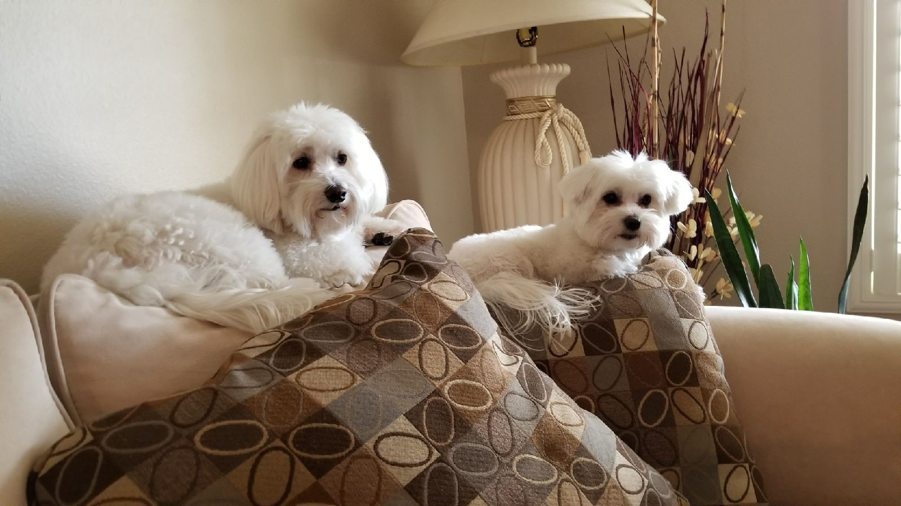

Legos I've Built
It's a nice distraction when I want to relax, but keep my mind at work


Here, you will learn more about me including some background information and see the skills I have developed while creating my personal website. My goal was to create a safe, fun, and unique environment.
My name is Taylor Knobloch and I am currently a 4th year enrolled at Cal Poly Pomona majoring in computer science. Not sure why I chose this major when it continues to leave me sleep deprived, but I did. I was born and raised in California with my two siblings who are my dogs by the way, but you can't judge by appearance. They can be alot to handle, especially hope since she is the youngest in the family.
|  |
I graduated from Ayala High School where I was given my diploma and in my 4th year, I met my closest friends who are still with me to this day. I don't know what I would do without them. I have had three jobs in my life, but I usually say I have only worked two because one of them is walmart, and that lasted two months. My current job, I work as a bar/server for a restraurant called Boiling Point. If you have been, write a good review about me on yelp and maybe I will get a promotion. I will have been working there for two years now in August of this year.
I'd like to think that I am social when I feel comfortable with those around me. Otherwise, I might be quiet if I am tired or don't know what to say. My friends think of me as someone who is kind and funny, or I hope at least. They have definitely said that I am loud, but I am working on it. I have a habit of putting people first before myelf, but I believe that can be a good thing.
| My Favorite Things ❤ | |
|---|---|
| friends | gaming |
| music | legos |